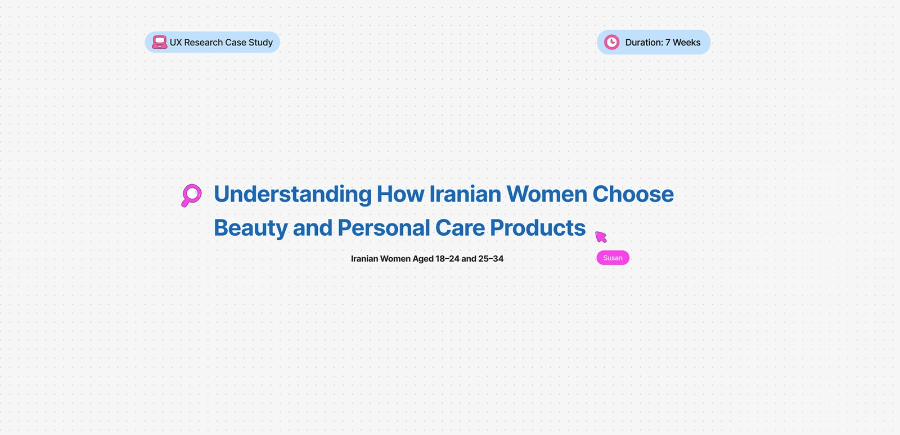
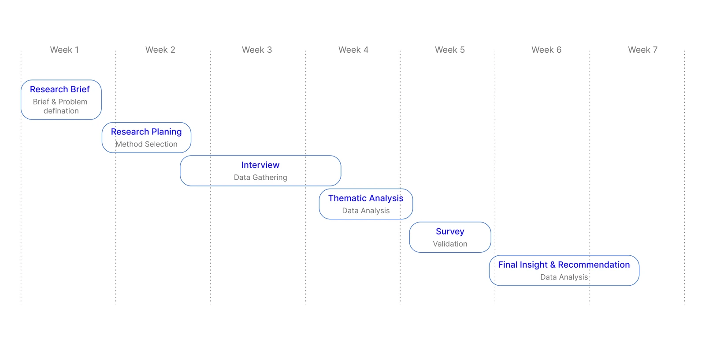
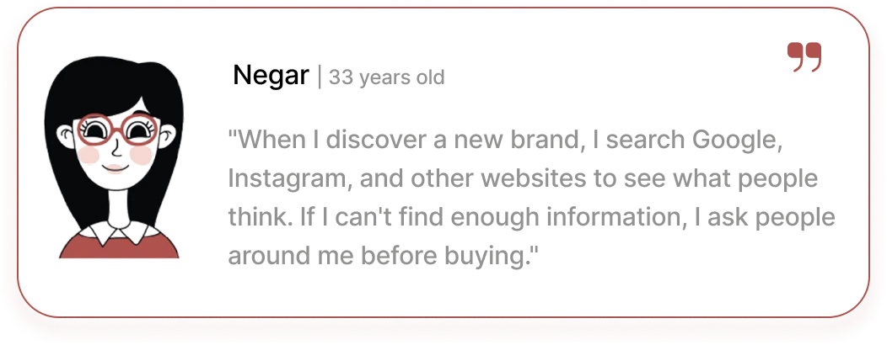
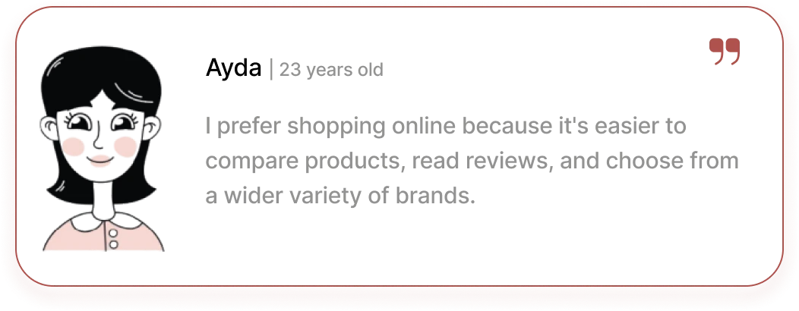
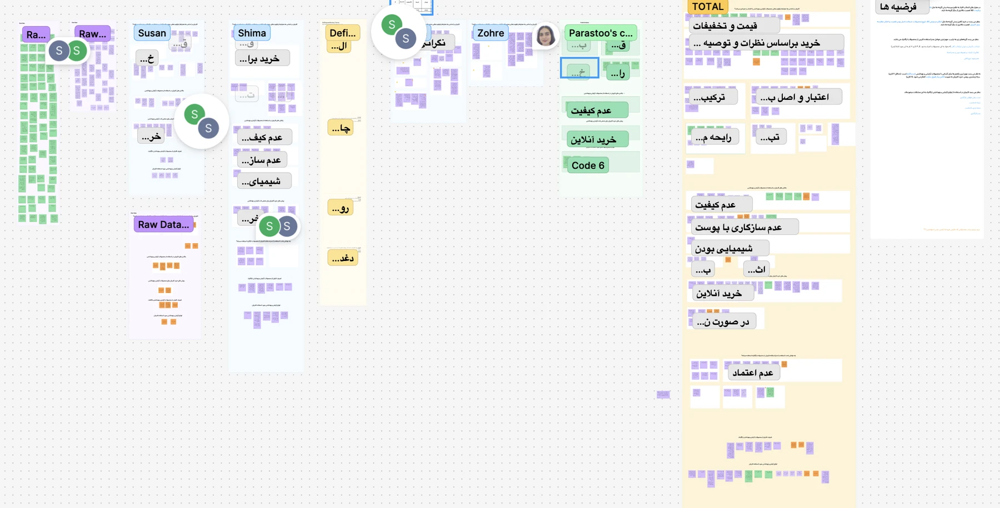
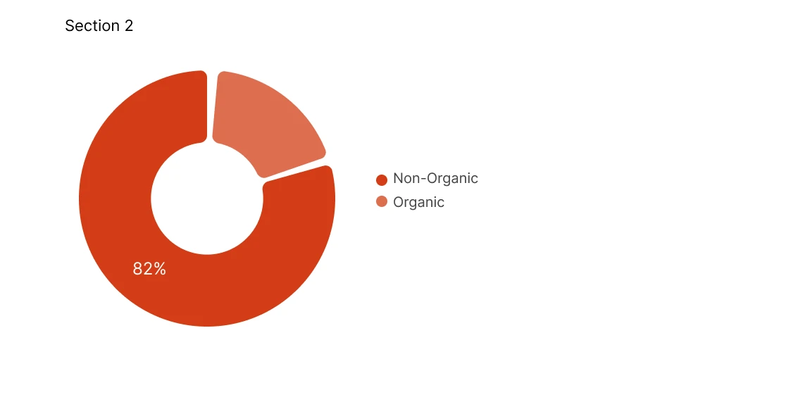
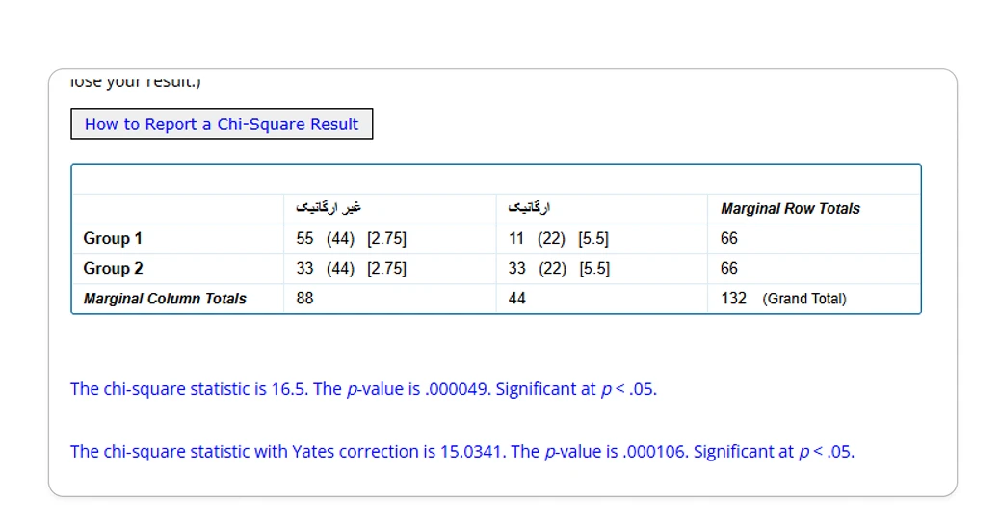
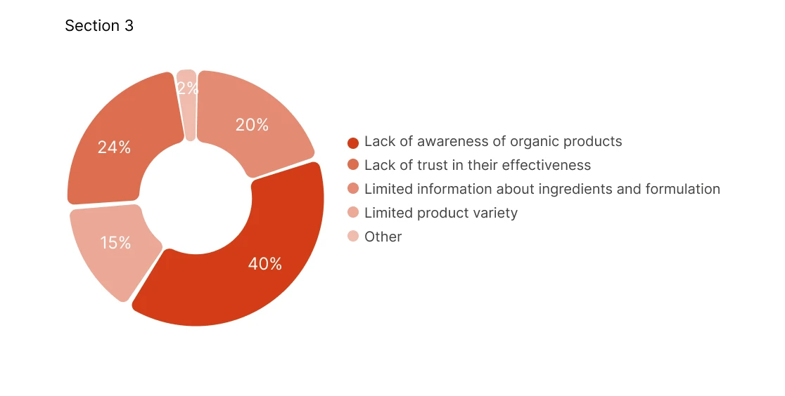
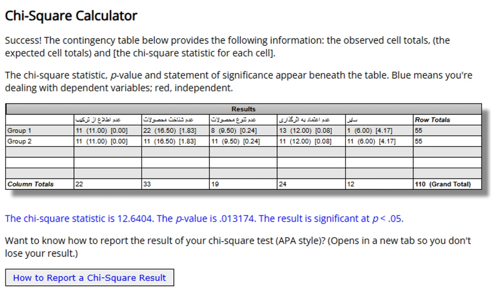
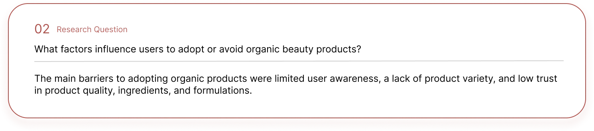

Understanding How Iranian Women Choose Beauty and Personal Care Products

- Role
- User Researcher
- Timeline
- 7 weeks
- Method
- Semi-structured interviews, survey
- Tools
- Google Meet, FigJam
A company was preparing to bring an organic beauty platform to Iran, but we didn’t yet know how women there actually choose beauty and personal care products, or what stops them from trying organic ones. We interviewed 14 women, then ran a survey with 67 participants to check whether what we heard held up on a larger scale. Most people were still using non-organic products, and not knowing enough about organic ones turned out to be the biggest barrier. Trust, recommendations and clear return policies also played a big part in buying online.
Overview
Why we started this research?
It all started with a simple question: What influences Iranian women when choosing beauty and personal care products?
Although interest in organic products is growing around the world, they remain a small part of the Iranian market. Before introducing an organic beauty platform, we wanted to understand how users make purchasing decisions, what they value most, and what prevents them from trying organic alternatives. This research helped us uncover the insights needed to design a product that aligns with users’ real needs and expectations.
Project Duration

Research Plan
Project Name
Understanding How Iranian Women Aged 18–24 and 25–34 Choose Beauty and Personal Care Products
Project Overview
As global awareness of organic and natural beauty products continues to grow, some Iranian consumers have also become increasingly interested in products that contain fewer synthetic ingredients and have a lower environmental impact. However, the availability of organic beauty and personal care products in the Iranian market remains limited, while demand continues to be dominated by non-organic products.
In response to this opportunity, a company specializing in organic beauty and personal care products planned to enter the Iranian market by launching an e-commerce platform. Before introducing the platform, the company wanted to understand how Iranian consumers choose beauty and personal care products, with the goal of identifying user needs, purchase drivers, and decision-making behaviors that could support the successful adoption of organic products.
Research Questions
- What criteria and priorities do users consider when choosing and buying beauty and personal care products?
- What factors influence users to adopt or avoid organic beauty products?
- What factors influence users’ purchase decisions for beauty and personal care products?
- How did users purchase beauty and personal care products: online or in-store?
Research Methodology
Data collection methods
- Desk research
- Semi-structured interview (Qualitative)
- Survey (Quantitative)
Data Analysis methods
Thematic analysis
Target Audience
Women aged 18–24 and 25–34. These age groups were selected because, according to the Khanoumi platform report, they represent the largest group of beauty and personal care consumers.
Recruitment Criteria
- Purchased beauty or personal care products within the last six months.
- Used either organic or non-organic beauty and personal care products.
User Interviews
To understand how users choose beauty and personal care products, identify the factors that influence their decisions, and explore their attitudes toward organic products.
Interview Process
We first used a screen survey to identify eligible participants for the interviews. Then, we conducted 14 remote semi-structured interviews, with each session lasting approximately 30–45 minutes. After the 14th interview, we stopped the research process as no new insights emerged and participants’ responses started to become repetitive, indicating data saturation.
Key Topics Covered
- Beauty Product Purchasing Behavior
- Purchase Decision Factors
- Product Discovery Journey
- User Pain Points
- Online & In-Store Shopping Behavior
- Organic Product Awareness


Thematic Analysis
To analyze the collected data, we used a thematic analysis approach to identify key patterns from their responses. After reviewing the responses, we organized the data into major themes that emerged from participants’ responses. The primary themes identified include:

Key Interview Findings (Early Insights)
Survey Validation
To validate the qualitative findings and evaluate them on a larger scale, a quantitative survey was designed and conducted. The survey aimed to measure whether the insights identified from the interviews could be generalized to a broader user group. The collected data were analyzed using statistical tests to determine whether the research hypotheses were supported in the larger population.
Survey Stats
Target Group
The survey was designed to include both users of non-organic (chemical) and organic beauty and personal care products. This allowed us to compare the motivations, concerns, and purchasing behaviors of both groups. To test the research hypotheses and examine the relationships between categorical variables, we used the Chi-square test.
Some of the Selected Hypotheses to Be Validated
Hypothesis 1: It seems most users currently use non-organic beauty and personal care products.


To validate this hypothesis, we conducted a survey. The results showed that 82% of participants currently use non-organic beauty and personal care products, while only 18% reported using organic products. A Chi-square test indicated that this difference was statistically significant (χ² = 16.5, p < .001), suggesting that the observed pattern is unlikely to be due to chance. These findings support our hypothesis that most users currently use non-organic products.
Hypothesis 2: It seems lack of awareness and familiarity with organic products is the primary barrier to their adoption.


To validate this hypothesis, we conducted a survey. The results showed that 40% of participants cited a lack of familiarity with organic products as the primary reason for not using them. Statistical analysis (χ² = 12.64, p = .013) indicated that this pattern was unlikely to be due to chance, providing evidence in support of our hypothesis.
Final Insight

Limitation
This study was conducted as part of an academic project and had several constraints:
- 1- Conceptual nature: The project was exploratory and not implemented in a real-world setting.
- 2- Participant recruitment: Access to survey and interview participants was limited, and participants were not randomly selected, which may affect the generalizability of insights.
- 3- Limited timeline: The research and analysis were carried out within a short timeframe, limiting iteration and depth.
Takeaway
- Awareness is the main barrier to organic product adoption. Users need more information and education about organic products.
- Trust plays a key role in purchasing decisions. Users value product authenticity, ingredient transparency, and quality.
- Recommendations and social proof strongly influence users’ choices.
- Online shopping requires building confidence through clear information and return policies.
- Natural ingredients are the main motivation for users to consider organic products.
Research-Driven Product Opportunities
- Increase awareness of organic products: Provide educational content about organic ingredients and their benefits.
- Build trust through transparency: Show detailed ingredient information, certifications, and product authenticity.
- Leverage social proof: Highlight verified customer reviews and recommendations.
- Reduce purchase risk: Offer a clear and simple return policy for beauty products.
- Use Instagram as a key acquisition channel: Promote products through educational and creator-led content where users already discover beauty brands